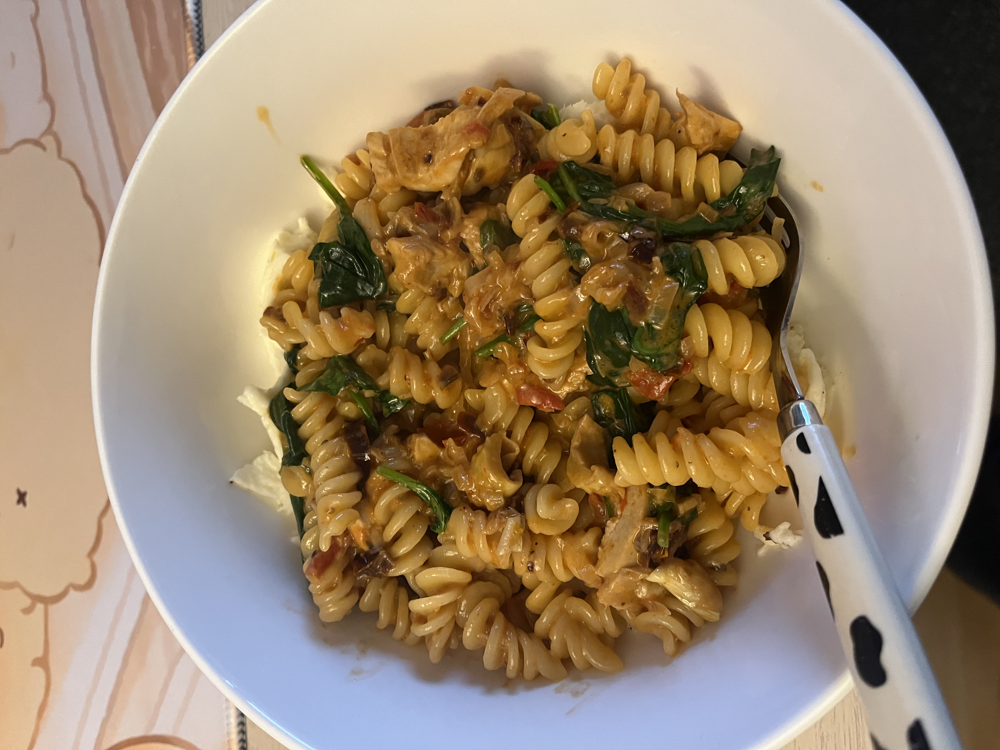

Pasta

My New Favourite Pasta
This is inspired by a lot of sundried tomato pasta recipes I've seen online. It's delicious, quick and easy to make.
My advice for making this recipe is make sure all of your ingredients are already cut up and prepared so that you can bring everything together easily.
Ingredients(for 1 person)
- 100g of your pasta of choice
- Meat of choice, here I used leftover roasted chicken but anything else can work
- 1 small red onion finely diced
- 1 garlic clove finely diced
- About 1/2 tbsp of tomato paste
- 2 tablespoons of cream
- Salt and pepper to taste
- A bit of olive oil for the onions (depends on the meat you use)
- Optional: One handful of fresh spinach
- Optional: One ball of mozarella
Steps
Prepare the ingredients
- Finely dice onions and garlic.
- Measure out pasta.
- Bring all other ingredients close to your cooking station.
Cooking
- Fill a medium size pot with water, add some salt and bring to a boil.
- When you see the water almost boiling, heat up a medium size pan to medium-high heat with some oil.
- Now that the water is boiling, add your pasta and cook according to instructions (mine is around 10min.)
- Back to the pan: add in the onions and lower the heat to let the onions soften.
- When the onions have softened, add in the garlic, your meat and stir until everything is cooked through (if using raw meat or fatty meat, check the modifies instructions lower).
- Now add in the tomato paste and stir around the pan.
- When you smell the tomato fragrance and everything in the pan looks more red, add the cream and mix everything well to form a sauce.
- Lower the heat under the pan and let's check back on the pasta.
- When the pasta is done cooking, turn off the heat underneath. Take some of the pasta water and add it to the pan, it should start bubbling and steam should come out.If you're not sure about how much water to add, start with a few tablespoons and keep some of the water when straining the pasta.)
- Strain the pasta and add to the pan. Start mixing everything together to cover the pasta in sauce and make it all homogenous. This is also where you can add in the spinach, salt and pepper to taste.
- Add mozzarella to a bowl you like and add the pasta over it.
And now you have a delicious pasta dish that took no time and is going to make you all warm inside!